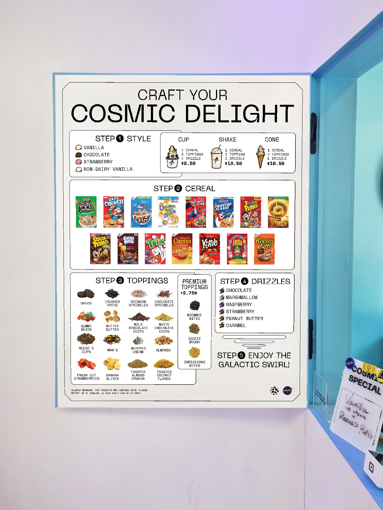
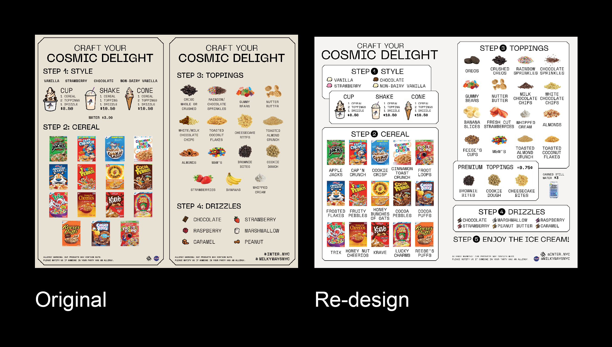
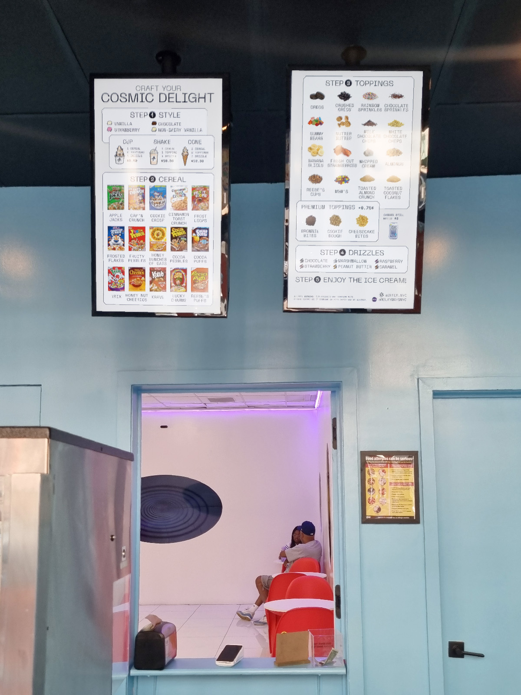

This is a re-design for the menu boards of the ice cream shop MilkywaysNYC (now closed). Working as a part-time employee at the shop, I've wanted to
make the menu design more clear and effective, for the confused customers and for us staff having to repeat the same information over and over again.
There were many problems with the original designs that were made before the shop opened and had changes in their menu. Also, there were no consistent design system for the shop, and I had to
try to keep the original design choices as much as possible.
For the physical board, there were missing topping items, some items grouped together caused confusion, the order of the steps of customizing your ice cream were unclear, and often
little children would just point to the toppings or the drizzles which were their eye-height, thinking those were ice cream flavors. With my design, I've attempted to section out the steps and make the first step of the customazation, choosing ice cream flavor, more visible.
I've also made the typography overall more coherent and implemented the menu changes.
For the digital menu boards, because of them being shown on the TV screen above the register, often times older adult customers would mention that they can't read the small texts.
And the two separated screens made customers confused of the steps with the title repeating on the second board. I've implemented the changes made with the physical board,
but also putting cereal brand names.